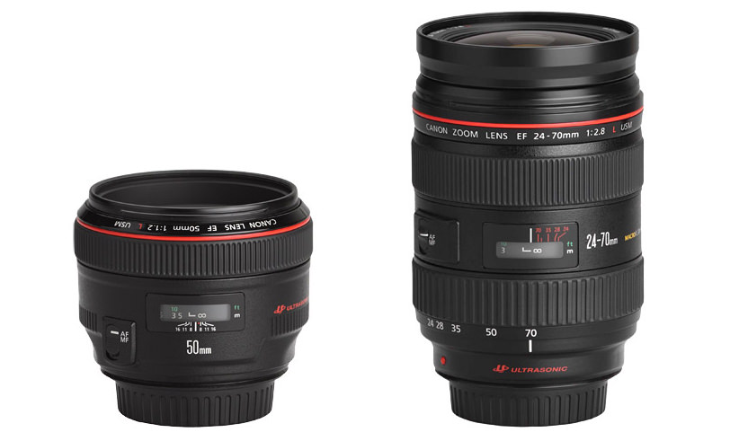

PRIME VS ZOOM
Which is better to choose, a prime lens, or splurge on a fast zoom lens? The topic of prime lens vs zoom is inexhaustible for myths, a large number of this myths were born not without the help of “gurus” from social networks. For example. Many people advise purchasing a prime lens, using only aperture ratio and the cost of inexpensive high-aperture prime lenses. Of course, a fast clip will be better than a regular dark zoom, like a kit 18-55mm lens. But if you ask about how you plan to use the lens and what you intend to shoot, would that advice be as good as before? The bottom line is simple. Prime and zoom lenses cannot be compared directly. They have different purposes and uses. It all depends on the shooting conditions. In certain shooting conditions, zoom is preferable to fix. As well as vice versa.
Why zoom lenses are better than prime lenses?
You photograph children with a prime lens. Will it be convenient to constantly run away or approach the subjects being filmed in order to fit moving children into the frame? Losing interesting scenes while you frame the shot with your feet? Of course, using the zoom lens for this kind of shooting seems to be the smarter choice. For the same reason, sports competitions or travel photography are inconceivable without the use of zooms, which allow you to quickly zoom in or out of the scenes being shot. A zoom lens allows you to be at an optimal distance without having to move closer or further away. The problem with zoom lenses is that aperture lenses are very expensive.
Why prime lenses are better than zoom?
Usually, when talking about the advantages of a prime lens, several parameters are mentioned:
- Aperture
- Sharpness
- Picture
These points are worth examining in more detail. As we have already found out, there are also high-aperture zoom lenses that are only slightly inferior in aperture to fixed lenses. Of course, the price range between high-aperture zoom and fixed zoom can reach tens of hundreds of dollars. But that doesn't change the fact that fast zoom lenses exist. Running a little ahead. For the overwhelming majority of "professional" photographers, the choice in favor of a high-aperture prime lens is primarily due to the prohibitive cost of a professional high-aperture zoom lens. I will never believe that it is more convenient for a wedding photographer to shoot with two cameras with two prime lenses than using one suitable high-aperture professional zoom. Prime lenses are really sharper. This is due to the design of the lens, where there are no rotating lens units. All lenses are rigidly fixed in place, which allows for more accurate lens alignment and better image sharpness. But have you ever wondered how the visual assessment of lens sharpness occurs? I can't vouch for the accuracy of the information, but manufacturers estimate the final sharpness from photographs 9 to 12. This is the standard that was born in the era of paper photo albums. It is believed that a sharp image in a photo of this format is enough for most camera users. The age of smartphones has made its own adjustments to the size of the image, reducing the required size for viewing even more If your photo looks sharp at a similar frame size, then it makes no difference whether it was shot with a prime or a zoom. Photo's sharp and that's enough. Many people argue, they say, increase to 100% and you will see that a prime lens is sharper than a zoom. Let's be honest. Do you often print photographs measuring 30 cm by 45 cm? In ideal conditions, the prime is sharper than the zoom. But do you need a lens with perfect sharpness for small photos that are shared on social media? The answer is yours
Fixed lenses are sharper, but this does not mean that you will get a blurry image from a fast zoom. The difference in sharpness between the two types of lenses lies in the dry characteristic curves of the technical documentation, not in visual sharpness. Another myth about the superiority of a prime lens over a zoom lens is the lens' shot quality. Most ordinary viewers will never see the beauty of your lens fresh shot after the processing that you do in Photoshop or Lightroom. Of course, expensive prime lens models have a plastic pattern, good rendering of halftones and gradients. Who said that zoom lenses don't have this? There are high-aperture professional zoom lenses that do not differ in image quality from prime lenses. But the price of these zooms is completely inhumane. However, this does not deny the existence of a zoom with a pattern that is not inferior to that of a prime lens. The only question is whether you have enough money to buy such a zoom. I will summarize all of the above. By and large, there is no significant difference for the average user between prime and zoom in aperture, pattern, micro-contrast, or sharpness. The only significant difference is the difference in the cost of lenses and their usability under certain shooting conditions.

Which lens is better to choose: prime or zoom
Personally, I don’t know which will be best for you. I shot with both prime and zoom. There are many situations where a prime lens is preferable. This is either shooting in low light or calm scenes that allow you to calmly frame the frame with your feet and shoot your masterpiece. In other situations, zoom is preferable because it allows you to shoot action scenes with greater convenience and comfort. What do I want to convey to you in the end ?! These are fundamentally different lens designs with their own advantages and disadvantages. It is impossible to say unequivocally that the prime is better than the zoom or the zoom is better than the prime. Each of these types of lenses has its own place and time of use. And the more experienced the photographer, the better he understands which lens and when to use. And remember. There are specialized lenses whose use is not always justified in general commercial or love story photography. For example Canon 85mm / 1.2 lens. No doubt about it, this is an amazing lens. But here's what Canon writes about it: "The f / 1.2 aperture allows photographers to achieve vivid portrait effects, such as bringing the subject's eyes clearly and blurring the tips of the eyelashes." How often would you need to shoot something like this if you are not a professional photographer from the branded photography market? Canon 85mm / 1.8 costs about four times cheaper. Think about it.